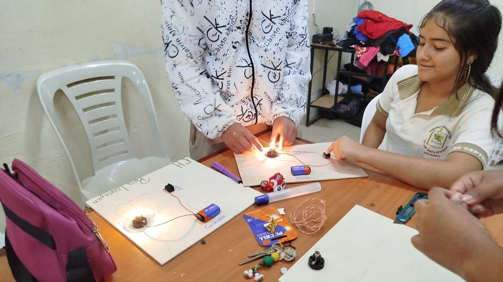
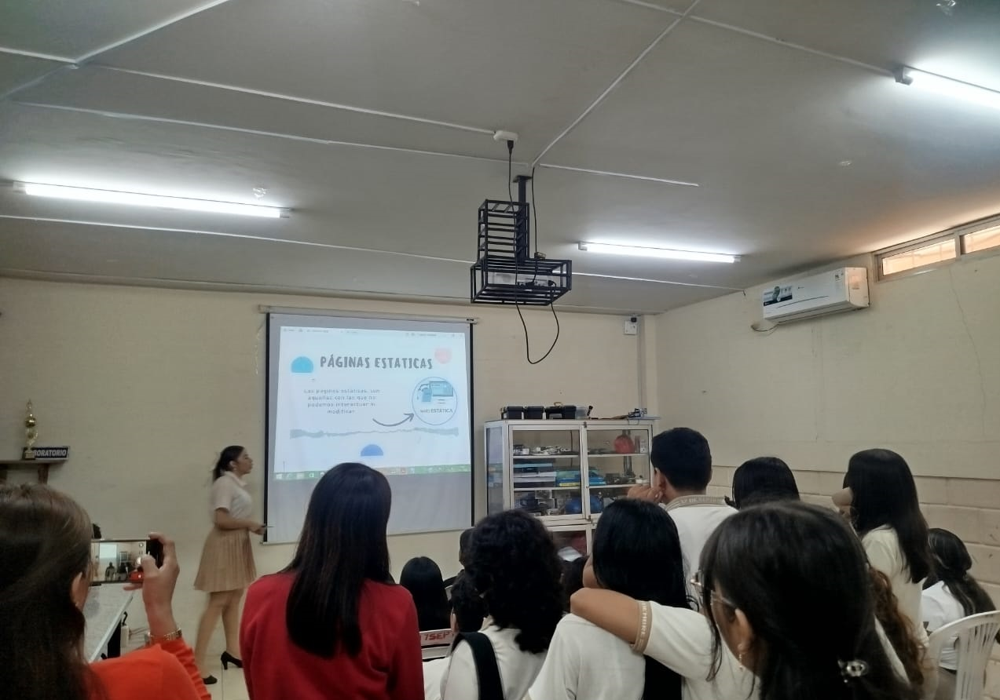
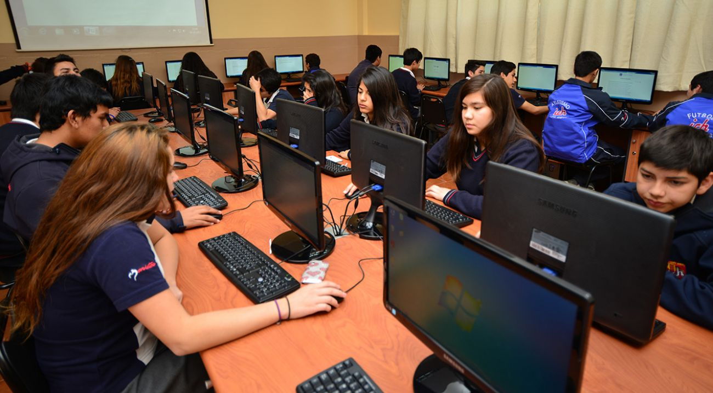
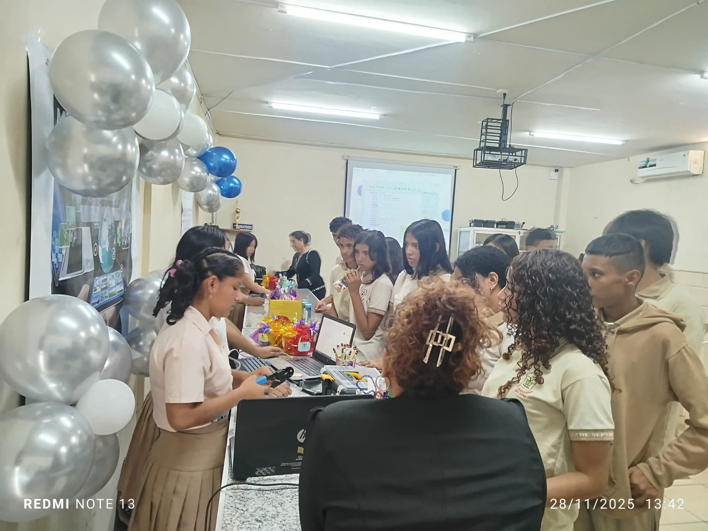

Años de formación técnica progresiva.
BACHILLERATO TÉCNICO EN INFORMÁTICA
Una formación moderna y versátil que combina tecnología, lógica, creatividad y práctica. Aquí se forjan los futuros desarrolladores, técnicos y creadores digitales.
Áreas clave: programación, redes, hardware, software y más.
Enfoque en práctica, proyectos reales y trabajo colaborativo.

¿Qué es este bachillerato?
El Bachillerato Técnico en Informática forma estudiantes capaces de desarrollar soluciones tecnológicas innovadoras, combinando conocimientos teóricos con habilidades prácticas en programación, redes, bases de datos y desarrollo de software.
Esta formación se apoya en disciplina, lógica y creatividad para preparar a los estudiantes para el mundo laboral o para continuar estudios superiores en áreas tecnológicas. Los estudiantes adquieren competencias que les permiten diseñar, implementar y mantener sistemas informáticos adaptados a las necesidades actuales del mercado.
Formación que te prepara para el futuro
En este bachillerato no solo aprendes a usar computadoras: entiendes cómo funcionan, cómo se estructura un sistema y cómo crear soluciones reales.
Esta base es la misma que encontrarás luego en carreras como Ingeniería en Software, Computación, Sistemas o Seguridad Informática. Todo empieza aquí.


Un aprendizaje práctico y disciplinado
Aquí desarrollas hábitos de trabajo, responsabilidad técnica y pensamiento lógico: pilares que toda universidad valora.
Tu experiencia en proyectos, laboratorio y trabajo en equipo te da una ventaja real al ingresar al nivel superior.
¿Por qué estudiar Informática?
Aprendizaje Práctico
Proyectos y actividades reales del bachillerato técnico en informática. Desarrolla habilidades mediante ejercicios prácticos y casos reales del mundo laboral tecnológico.

Pensamiento Lógico
Desarrolla habilidades de razonamiento mediante ejercicios algorítmicos y resolución de problemas complejos. Perfecto para mentes analíticas y creativas.

Proyección Profesional
Prepárate para estudios superiores y carreras tecnológicas. Abre puertas a universidades y especializaciones en el área de tecnología e innovación.

Salida Laboral Real
Base sólida para entrar al mercado laboral con competencias digitales demandadas. Desarrollador, técnico en redes, administrador de sistemas.

Competencias Técnicas
Domina lenguajes de programación, bases de datos, redes y desarrollo web. Conviértete en un profesional completo del área tecnológica.

Educación Integral
Combina conocimientos técnicos con formación humana y valores. Prepara estudiantes para los desafíos del mundo actual y futuro.
